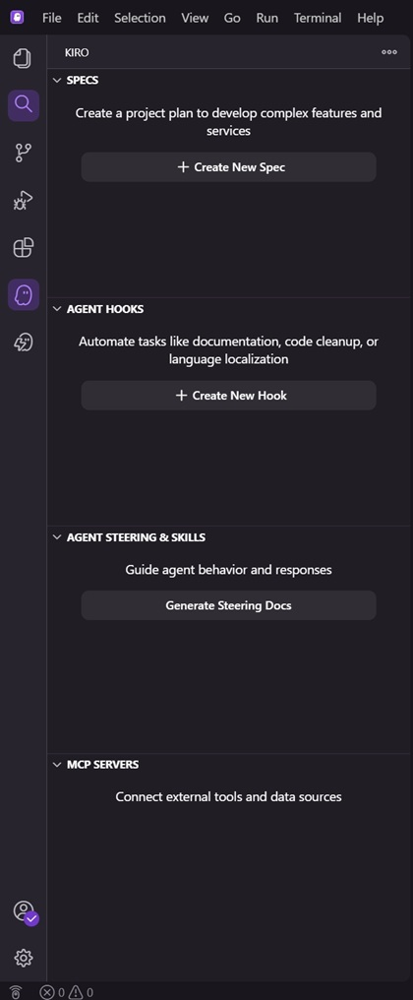

Use Kiro to Build a Bank-Grade Chatbot over Athena
A step-by-step course: install Kiro, create spec files (requirements → design → tasks), and let Kiro implement a production Python chatbot that queries Athena tables — using SDD with human approval gates at every phase.
Level Zero → Principal
Date July 2026
Output Production Python Project
Stack AgentCore + LangGraph + Cedar + Lake Formation
Course Roadmap
This course follows the SDD workflow: plan first, Kiro builds second.
Phase
Sections
What you learn
Output
Foundation
00
SDD concepts, EARS, how to generate spec files
Kiro installed, workflow understood
Configure
01
Steering, hooks, MCP servers
Security rules + automation in place
Build
02
Architecture, auth, tests, implementation
Complete chatbot/ Python project
Ship
03
MVP scoping, governance, cheat sheet
Production-ready, approved system
Beginner
Acronym Glossary
This course uses a number of acronyms before (or without) always spelling them out inline. Reference table below — hover any underlined term elsewhere in the course for a quick reminder.
Term
Stands for
Where it's used
SDD
Spec-Driven Development
The overall workflow this course teaches
EARS
Easy Approach to Requirements Syntax
How requirements.md is written
STRIDE
Spoofing, Tampering, Repudiation, Information disclosure, Denial of service, Elevation of privilege
Threat-modeling framework used in design.md
ADR
Architecture Decision Record
Design rationale captured in design.md
OBO
On-Behalf-Of (token exchange)
AgentCore Identity — queries run as the authenticated user, not a shared service role
CPM
Critical Path Method
How tasks.md groups work into dependency-ordered waves
MCP
Model Context Protocol
Tool-calling standard used both by Kiro (dev-time) and the chatbot's Gateway (runtime)
00 — Foundation
Beginner
Vibe vs Spec: Why SDD for a Bank Chatbot
Kiro offers two session types. This course uses Spec exclusively.
💬 Vibe
"Chat first, then build." Explore ideas, iterate. Great for prototypes.
Not used in this course.
📋 Spec ← THIS COURSE
"Plan first, then build." Create requirements and design before coding. Required for regulated systems.
A bank chatbot touching financial data needs formal requirements, a reviewed security architecture, and audit-ready decisions — before a line of code exists. Spec mode enforces this.
Kiro generates requirements in EARS (Easy Approach to Requirements Syntax) — every requirement is testable. [Wikipedia]
WHEN a user submits a question
THE SYSTEM SHALL perform semantic retrieval to identify the top-k tables
IF the model cannot produce valid SQL after 2 retries
THEN THE SYSTEM SHALL fail gracefully and inform the user
In Kiro's sidebar, under SPECS, click "+ Create New Spec". A text input appears at the top of the editor:
┌─────────────────────────────────────────────────────────────────────┐│Enter your idea to generate requirement, design, and task specs.││││ Specs are a structured way to build features so you can plan ││ before building (Press 'Enter' to confirm or 'Escape' to cancel) │└─────────────────────────────────────────────────────────────────────┘
Paste your prompt into this input and press Enter. Kiro then generates all three spec files with approval gates between each phase:
Step
You do
What happens
1
Sidebar → SPECS → + Create New Spec
Text input appears at top of editor
2
Paste your prompt (below) → press Enter
Kiro generates requirements.md
3
Review requirements → Approve
Kiro generates design.md
4
Review design → Approve
Kiro generates tasks.md
5
Review tasks → Approve
Spec complete — ready to implement
The prompt to paste into the spec input
Paste this into "Enter your idea..." and press Enter
Design a production chatbot for NatWest business users to query several hundred Athena tables in natural language. Project directory: chatbot/
- Cognito federated to corporate IdP (SAML/OIDC, MFA, 15-min JWTs)
- FastAPI (chatbot/api/) — thin auth layer, delegates to agent
- LangGraph agent (chatbot/agent/) on AgentCore Runtime — explicit graph with disambiguation (max 3) and self-correction (max 2)
- ALL tool calls through AgentCore Gateway + Policy (Cedar, default-deny, forbid-wins)
- MCP server (chatbot/mcp_server/) — list_tables, get_schema, estimate_cost, run_query
- AgentCore Identity OBO — queries run as authenticated user
- Lake Formation at Athena engine (second independent auth layer)
- Bedrock Guardrails (Standard) on every model call, input + output
- Immutable audit trail (S3 Object Lock, 7-year)
- Reconciliation job: alert + fail-closed if Cedar and Lake Formation diverge
Structure: chatbot/{api,agent,mcp_server,policies,infra,tests,scripts}/ + pyproject.toml
After all 3 files are approved
Execute tasks: #spec:athena-chatbot run all tasks in wave 1
Beginner
Getting Started: Creating the Chatbot Feature Spec (Full Walkthrough)
This section maps the official Kiro "Getting Started" steps to the Athena chatbot, showing exactly what you click, what you type, what Kiro asks, and what it produces at each stage.
Overview of the Flow
Step 1 Click + under Specs (or choose Spec from chat pane)
↓
Step 2 Provide initial prompt describing your chatbot idea
↓
Step 3 Choose Feature when Kiro asks your intent
↓
Step 4 Choose workflow: Requirements-First / Design-First / Quick Plan
↓
Step 5 Follow the workflow through each phase to implementation
Step 1 — Open the Spec Creation Dialog
Action
Detail
Option A
In the Kiro sidebar (left panel), find the SPECS section. Click + Create New Spec.
Option B
Open the Chat pane and choose Spec as the session type (not Vibe).
What you see
The Kiro sidebar shows four panels: SPECS, AGENT HOOKS, AGENT STEERING & SKILLS, and MCP SERVERS. Click + Create New Spec at the top. A dialog opens asking you to describe your project idea.

Kiro sidebar — click "+ Create New Spec"
Step 2 — Provide Your Initial Prompt
This is the most critical step. A vague prompt produces vague specs. Below are three prompt options depending on your level of detail:
Option A: Minimal prompt (not recommended for regulated systems)
Minimal — produces weak specs
Build a chatbot that lets users query Athena tables using natural language.
Option B: Moderate prompt (acceptable for internal tools)
Moderate — covers key concerns
Build a Python chatbot for business users to query Athena tables in natural language.
- Authentication via Cognito with corporate IdP
- FastAPI backend with JWT validation
- LangGraph agent with self-correction and disambiguation
- MCP server with tools: list_tables, get_schema, run_query
- Cedar policies for access control (default-deny)
- Lake Formation for row/column-level security
- Audit logging to S3
Project structure: chatbot/{api,agent,mcp_server,policies,infra,tests}/
Option C: Bank-grade prompt (recommended for this course)
Full — copy this for bank-grade output
Design a production Security Architecture for a chatbot enabling business users at a Tier-1 bank to query several hundred Amazon Athena tables in natural language. Project directory: chatbot/
Security Design Principles (every component choice must trace to at least one):
- P1 Defense in depth: no single control is the sole barrier (two-layer auth, Guardrails at model AND gateway)
- P2 Default-deny: access denied unless explicitly permitted (Cedar, PrivateLink, no "allow all" IAM)
- P3 Least privilege: OBO tokens scoped per-user per-session; read-only workgroup; 15-min JWTs
- P4 Separation of control planes: security decisions made outside the component they protect (Policy at Gateway, not inside agent; Lake Formation at Athena, not in app code)
- P5 Deterministic over probabilistic: Cedar (formal, verifiable) for authorization; Guardrails (probabilistic) only for content safety
- P6 Assume breach: reconciliation detects drift; audit log survives component failure; kill switch for immediate containment
Authentication & Session:
- Amazon Cognito federated to corporate IdP (SAML 2.0/OIDC, MFA enforced, 15-min access tokens, 8-hour refresh tokens)
- Cognito maps IdP SAML assertions to custom claims: department, role, data-classification-tier, groups
- FastAPI on ECS Fargate (chatbot/api/) — thin auth layer: JWT validation (RS256 signature, expiry, audience, issuer), rate limiting (30 req/min per user), circuit breaker (fail to 503), session timeout (45 min idle)
- Internal ALB only (HTTPS 443, ACM cert) — no public internet path, security group allows inbound only from corporate CIDR
- Lambda-backed IdP webhook for deprovisioning (RevokeToken within 5 min of IdP event)
- No admin_initiate_auth in production — admins cannot impersonate users
Agent & Orchestration:
- LangGraph agent (chatbot/agent/) hosted on AgentCore Runtime via AgentCore Starter Toolkit — explicit graph with named nodes and conditional edges so a security architect can see every path
- Why LangGraph (not Strands Agents, CrewAI, or Bedrock managed agent): explicit graph = auditable, bounded loops as first-class concept, conditional edges and cycles are native. Bedrock managed agent is a black box — cannot enforce bounded retries structurally or model disambiguation as an explicit branch
- Agent graph nodes: intent_classify → glossary_resolve → schema_retrieve → disambiguate (conditional, max 3 rounds) → sql_generate → validate_sql → tool_call → self_correct (conditional, max 2 retries, structurally bounded in graph definition) → output_scan → format_respond
- AgentCore Memory for per-user conversation state (session-scoped, no custom DynamoDB needed)
- Schema retrieval via RAG over OpenSearch Serverless (VPC-only, vector type) containing embedded table/column metadata + business glossary terms + synonyms (Bedrock Titan Embeddings)
- Re-index vector store within 1 hour of Glue Catalog changes (EventBridge-triggered pipeline)
- Only authorized schemas (per Lake Formation grants for the authenticated user) included in retrieval context presented to LLM — prevents schema-level information leakage
- AgentCore Runtime billing: no CPU charge during I/O wait (waiting for LLM/Athena), ~60-70% cheaper than equivalent Fargate for I/O-heavy agent workloads
- Runtime profile: 1 vCPU, 2 GB memory, up to 8-hour sessions, managed auto-scaling
Authorization (two architecturally independent layers):
- ALL tool calls routed through AgentCore Gateway + AgentCore Policy (Cedar, default-deny, forbid-wins semantics)
- Policy never sees the prompt — evaluates only structured metadata: principal (OAuth claims) × action (tool name) × resource (database/table). Cannot be bypassed by jailbroken prompts.
- AgentCore Identity OBO token exchange — queries execute as the authenticated end user's federated identity, never a shared service role. Token vault keyed to (workload_identity, user_id). Secrets in Secrets Manager with 90-day rotation.
- AWS Lake Formation at the Athena engine (table/column/row/cell-level permissions, enforced by the query engine itself, not application code). Even if Policy has a gap, Athena physically cannot return unauthorized data.
- Reconciliation job (daily minimum): compare Cedar permits against Lake Formation grants for each principal/table combination. Divergence → P1 alert + fail-closed (deny the request). If reconciliation job itself fails, alert and block until resolved.
- Cedar policies support ABAC using OAuth claims (department, role, data-classification-tier)
- Natural-language Cedar policy authoring (AgentCore feature) with mandatory human review before deployment — auto-generated policies SHALL NOT deploy without sign-off
Tools (MCP server via AgentCore Gateway):
- chatbot/mcp_server/ implementing: list_tables, get_schema, estimate_cost, run_query
- Why MCP (not direct Lambda): semantic tool search, native Gateway/Policy/OBO integration, protocol standardization, automatic observability
- Semantic tool search enabled on Gateway (x_amz_bedrock_agentcore_search) — solves "which of 300+ table tools do I need" at the tool layer
- Dedicated read-only Athena workgroup (chatbot-readonly) with bytes-scanned limit, query result encryption (CMK), requester-pays disabled
- MCP server validates all inputs: reject non-SELECT, inject LIMIT, check partition filters
- Additional Gateway targets: glossary lookup tool, cost estimate tool
Safety & Content (Policy ≠ Guardrails — both needed for different purposes):
- Policy answers: "Is this principal allowed to call this tool?" (authorization, deterministic)
- Guardrails answers: "Is this content safe / on-topic / free of PII?" (content safety, probabilistic)
- Bedrock Guardrails (Standard tier) on EVERY model call, input + output: prompt injection detection, jailbreak detection, PII entity redaction (all 31 types, ANONYMIZE action), denied topics, content filters (HATE/VIOLENCE/SEXUAL/INSULTS/MISCONDUCT all HIGH)
- AgentCore Policy + Guardrails integration (June 2026): attach Guardrail to Policy engine for tool-call I/O scanning at Gateway boundary
- Output PII scan on query results + model narrative before display; redaction unless role permits viewing that PII category
- SQL validation node: SELECT-only allowlist, LIMIT injection (default 10,000), partition filter required on partitioned tables, reject queries with * on tables >50 columns, cost estimate check (block if >10 GB scan), reject full table scans on tables >1 TB without elevated entitlement
- Data freshness indicator on every result ("Data current as of…" from Glue Catalog partition/table update timestamps). Warning if data older than documented SLA.
- User-facing error messages with actionable guidance per error type (auth denied, cost exceeded, SQL failed, rate limited, out of scope)
Governance & Audit:
- Immutable audit trail: S3 Object Lock (Compliance mode, 7-year retention, cross-region replication for RPO=0). Record includes: principal, original question, generated SQL, policy decision (permit/deny + policy_id + version), Lake Formation outcome, estimated/actual cost, row count, guardrails findings, session_id, trace_id.
- AgentCore Observability: full OpenTelemetry tracing of every agent step, tool call, Policy decision, model invocation → CloudWatch dashboards (latency per node, error rates, Policy deny rates, cost per query) → bank SIEM (Splunk/QRadar) via subscription filters
- AgentCore Optimization: batch evaluations + A/B testing (traffic splitting via Gateway) before any prompt/guardrail change reaches production. Statistical significance threshold (p<0.05) before promotion. Auto-rollback if treatment degrades within 15 min. (Fallback: self-managed eval script via BatchEvaluation API if Optimization still in preview)
- Domain-specific evaluators: SQL correctness (golden dataset), schema fidelity (AST check vs. context), cost compliance (dry-run), answer quality (LLM-as-judge), safety (PII scan on eval outputs)
- Model card per SR 26-2 (Federal Reserve, April 2026): purpose, training data provenance, known limitations, performance metrics from eval loop, responsible human owner
- Administrative kill switch: disable any Gateway target within 5 minutes via API, no redeployment required. Runbook with escalation chain.
- Segregation of duties: Cedar policy author ≠ approver; CI/CD enforces `cedar validate`; manual approval gate between staging and prod
Threat Model & Assurance:
- STRIDE threat model covering all attack surfaces: Chat UI→ALB, user prompts (injection/jailbreak), LLM output (hallucinated SQL), tool-call boundary (Gateway), Athena query execution, OBO token exchange, Cedar policy management, audit log integrity
- Map controls to OWASP LLM Top 10 / MITRE Atlas: LLM01 (prompt injection), LLM02 (insecure output), LLM04 (model DoS), LLM06 (sensitive info disclosure), LLM07 (insecure plugin design), LLM08 (excessive agency)
- Independent penetration test before production (scope: bypass Policy via direct tool invocation outside Gateway, obtain OBO token for different user, replay expired OBO, 100+ adversarial prompt attacks, Cedar bypass, session hijacking)
- Chaos testing quarterly (AZ failure, AgentCore Runtime unavailability, Athena throttling)
Performance & Reliability:
- P95 end-to-end latency target: 30 seconds for queries scanning <1 GB
- Latency budget: JWT validation (15ms) + Runtime init (200ms) + intent classify (2s, use Claude Haiku) + schema RAG (500ms) + SQL gen (5s) + Guardrails input (400ms) + SQL validation (10ms) + Policy/Cedar (30ms) + OBO exchange (300ms) + Athena execution (15s P95) + Guardrails output (400ms) + formatting (100ms) = ~24s P95
- Optimization levers: columnar format (Parquet/ORC), query result caching, pre-computed per-user authorized schema sets
- Multi-AZ deployment (2+ AZs for all stateless components): FastAPI min 2 tasks / max 10, scaling on TargetResponseTime >1s or CPU >60%
- RTO 30 min / RPO 5 min for chat service; RPO 0 for audit log (cross-region replication)
- 99.9% monthly availability target (excluding planned maintenance)
Network & Encryption:
- ALL traffic via VPC PrivateLink — no public internet for agent-to-tool, tool-to-data, or agent-to-model traffic
- VPC endpoints for: Bedrock Runtime, AgentCore, Athena, Glue, S3, Secrets Manager, KMS, CloudWatch, Cognito, OpenSearch Serverless
- Customer-managed KMS keys (separate per data domain: data lake, audit, OpenSearch, query results, Gateway). Key policies scoped to specific service roles. CloudTrail logging on every kms:Decrypt.
- TLS 1.2+ everywhere; reject TLS 1.0/1.1
- Security groups: sg-alb (443 from corporate CIDR), sg-fastapi (8000 from sg-alb only), sg-vpce (443 from sg-fastapi + sg-agentcore)
- Secrets Manager for all OAuth client secrets, API keys — automatic rotation ≤90 days
- Data residency: all data (prompts, traces, audit, OBO tokens) remains within designated AWS region(s)
Compliance & Governance Gaps (require human sign-off, not tool-automatable):
- SR 26-2 (model risk management for AI/ML in banking)
- EU AI Act (Article 26 deployer obligations; assess Annex III Category 5(b) — access to essential private services)
- PCI DSS 4.0 (if cardholder data in scope)
- GDPR/UK GDPR (PII redaction, data residency, DSAR response via audit log)
- InfoSec review of AgentCore shared-responsibility model
- Cedar policy completeness (data governance team sign-off + periodic re-certification)
- Data residency legal review across jurisdictions
Deployment & CI/CD:
- AWS CodePipeline + CodeBuild (or GitLab CI): lint → test → cedar validate → batch evaluation → manual approval → canary deploy (5% → monitor 30 min → promote or auto-rollback)
- Rolling update for FastAPI (min healthy 50%, zero-downtime)
- Agent updates packaged via AgentCore Starter Toolkit as container images
Cost Analysis (include in design):
- Compare AgentCore Runtime vs. Fargate for agent hosting: show I/O-wait billing advantage (~60-70% savings for this workload profile)
- Show per-user cost attribution via workgroup tags
- Include CloudWatch Cost Anomaly Detection + AWS Budgets (alert at 80%/100%)
Well-Architected Alignment: explicitly map design decisions to all 6 pillars (Operational Excellence, Security, Reliability, Performance Efficiency, Cost Optimization, Sustainability)
ADRs (Architecture Decision Records): document for each major choice: LangGraph vs alternatives, AgentCore Runtime vs Fargate, two-layer auth vs single layer, OBO vs shared role, MCP vs direct Lambda, OpenSearch vs alternative vector stores
Infrastructure as Code: AWS CDK (TypeScript) with separate stacks for networking, security, data, compute, observability — no circular dependencies
Structure: chatbot/{api,agent,mcp_server,policies,infra,tests,scripts}/ + pyproject.toml
Why this level of detail?
Each line in this prompt maps to a specific section in the generated design.md. This prompt produced the full Security Architecture Design including: 6 security principles, Mermaid architecture + sequence diagrams, two-layer authorization deep-dive with failure scenarios, STRIDE threat model with OWASP LLM mapping, component table (23 services), cost comparison, latency budget, VPC topology with data flow classification, cryptographic controls, identity chain of trust, deployment architecture, 5+ ADRs, Well-Architected alignment, and evaluation framework. See the Exact Kiro Prompts section for annotations on why each line matters.
Step 3 — Choose "Feature" as Your Intent
After you submit the prompt, Kiro asks: "What is your intent?"
Option
When to use
For this chatbot?
Feature ← choose this
Building a new capability with requirements, design, and implementation
Yes — the chatbot is a full feature requiring structured planning
Bug Fix
Fixing an existing defect
No
Refactor
Restructuring without changing behaviour
No
Action
Click Feature. Kiro now asks you to choose a workflow.
Step 4 — Choose Your Workflow
Kiro presents three workflow options. Your choice determines the order of spec generation:
Workflow
Order of generation
Best for
For this chatbot?
Requirements-First
requirements.md → design.md → tasks.md
When you need stakeholder sign-off on what before deciding how
Good if compliance team must approve requirements before architecture
Design-First
design.md → requirements.md → tasks.md
When you already know the technical constraints and want architecture reviewed first
Recommended — bank security model drives the design
Quick Plan
All three generated at once, no approval gates
Well-understood features, low risk
Never for regulated systems — no human reviews auth before code
Warning
Quick Plan skips all human approval gates between phases. For a chatbot touching financial data, this is an anti-pattern — see Anti-Patterns.
User stories with acceptance criteria in EARS notation
Functional and non-functional requirements
Security and compliance requirements
Step 5 — Follow the Workflow Through Each Phase
After Kiro generates the first spec file, a review-and-approve cycle begins:
Phase A: Review the first generated file
What Kiro shows you
What you do
Your options
The generated spec file (design.md or requirements.md)
Read carefully. Check for gaps.
Approve to proceed, or ask for changes in the chat
Example review prompts you might send before approving:
Review prompt — if design is missing OBO
The design mentions a service role for Athena queries. Change this to On-Behalf-Of (OBO) token exchange via AgentCore Identity so that Lake Formation per-user grants actually apply.
Review prompt — if retry bounds are missing
Add explicit bounds to the agent graph: max 3 disambiguation turns, max 2 self-correction retries. Without these, the agent can loop indefinitely (cost bomb).
Review prompt — stress test
Walk me through what happens if a user's prompt jailbreaks the model into generating a query against a table they shouldn't see — where does the system actually stop that?
Phase B: Approve → next file generated
Once you click Approve, Kiro generates the next spec file in sequence:
Now you can start implementation by running tasks:
Run the first wave
#spec:athena-chatbot run all tasks in wave 1
Or implement a specific task
#spec:athena-chatbot implement task 16
Summary: Complete Action Sequence
#
You do
Kiro responds with
Time
1
Click + under Specs (or choose Spec in chat)
Prompt input dialog
2s
2
Paste the bank-grade prompt (Option C above)
"What is your intent?"
—
3
Click Feature
"Choose your workflow"
—
4
Click Design-First
Generates design.md (30-90s)
~60s
5
Review design → Ask questions or request changes
Updated design.md
5-15 min
6
Click Approve on design
Generates requirements.md (20-40s)
~30s
7
Review requirements → Request changes if needed
Updated requirements.md
5-10 min
8
Click Approve on requirements
Generates tasks.md (20-40s)
~30s
9
Review tasks → Request changes if needed
Updated tasks.md
5-10 min
10
Click Approve on tasks
"Spec complete. Ready to implement."
—
11
Type: #spec:athena-chatbot run all tasks in wave 1
Kiro writes code following the approved plan
2-5 min
Key Insight
The whole point of these approval gates is that no code exists until all three spec files are reviewed by a human. For a bank chatbot, this means your security architecture (design.md) and your access control requirements (requirements.md) are approved before Kiro writes a single line of code.
01 — Intermediate
Intermediate
Reviewing design.md: The Stress Test
After Kiro generates design.md, ask this question:
Stress-test prompt
"Walk me through what happens if a user's prompt successfully jailbreaks the model into generating a query against a table they shouldn't see — where does the system actually stop that?"
A correct answer must reference:
AgentCore Policy at the Gateway — deterministic, never sees prompt, only evaluates principal/action/resource.
Lake Formation at Athena — even if Policy has a gap, the query engine itself refuses unauthorized rows/columns.
Red flag
If the answer relies on "the system prompt tells the model not to" or solely on Guardrails — those are content safety controls, not authorization. The design isn't done.
Other checks
Does data flow through Gateway before reaching any tool?
Is OBO token exchange shown (not a shared service role)?
Is the retry loop structurally bounded in the graph?
Clear separation: Policy (authorization) vs Guardrails (content safety)?
Intermediate
Tasks & Waves
tasks.md is a dependency graph grouped into waves. Tasks within a wave run concurrently; waves run sequentially.
Wave 1 — no dependencies (run concurrently)
↓
Wave 2 — depends only on Wave 1
↓
Wave N — continues until complete
Executing tasks in Kiro
# Implement a specific task#spec:athena-chatbot implement task 22# Run an entire wave#spec:athena-chatbot run all tasks in wave 1
Tip
Before T-22 (agent graph), ask Kiro to generate a Mermaid diagram first. Review the graph structure with security team before any code.
01 — Intermediate
Intermediate
Steering Files: Persistent Project Rules
Steering gives Kiro persistent knowledge. Rules apply to every interaction without repeating them. Docs · Blog
Scope
Location
Applies to
Workspace
.kiro/steering/
This project
Global
~/.kiro/steering/
All projects
Create the security steering file
Tell Kiro
Create .kiro/steering/bank-security-model.md with:
1. All tool calls through Gateway + Policy
2. Lake Formation at query engine, not app code
3. Cedar policies require human review
4. Guardrails on every model call (input+output)
5. OBO token exchange, no shared service role
6. Bounded retry loops in graph structure
7. Immutable audit for all auth decisions
8. Segregation of duties: author ≠ approver
Kiro MCP (.kiro/settings/) = helps YOU build ≠ AgentCore Gateway targets = chatbot calls at runtime.
Intermediate
Anti-Patterns Worth Naming
Anti-pattern
Why dangerous
Instead
Quick Plan on regulated features
No human reviewed auth model before code
Design-First or Requirements-First
Vague requirements ("be fast")
Can't test or trace
EARS: WHEN X THE SYSTEM SHALL Y within Z
Shared service role for Athena
Lake Formation per-user grants become no-op
Always use OBO token exchange
Unbounded retry loops
Cost bomb + latency bomb
Structural bound in graph definition
Guardrails on generation only
Injection at any model call
Guardrails on EVERY call, input + output
Auto-deploy Cedar without review
Misconfigured permit exposes data
Human review mandatory before deploy
02 — Advanced Build
Advanced
Full Architecture
User → Cognito (SAML+MFA) → FastAPI (JWT) → AgentCore Runtime (LangGraph)
→ Gateway → Policy (Cedar) → Identity (OBO) → MCP Server
→ Athena → Lake Formation → Results
→ Guardrails PII scan → Format → User
All traced: Observability → Immutable audit (S3 Object Lock, 7yr)
Full diagrams, sequence diagram, component table, ADRs, and latency budget in design.md.
Advanced
Two-Layer Authorization
Layer 1: Cedar (Gateway)
Deterministic, default-deny
Never sees the prompt
Stops tool call from executing
Layer 2: Lake Formation (Athena)
Enforced by query engine
Cannot bypass via app code
Stops data from being returned
Scenario
Layer 1
Layer 2
Result
Jailbroken prompt
DENY
N/A
Blocked
Jailbreak + Cedar bug
ALLOW (wrong)
DENY
Still blocked
Both misconfigured
ALLOW
ALLOW
Reconciliation job detects
Advanced
Exact Kiro Prompts
Vague prompts produce vague designs. This is the same Design-First prompt introduced in Generate the Three Spec Files — reproduced here with annotations on why each line matters, so you understand what you'd be removing if you trim it down.
Annotated — why each line is here
Design a production chatbot for NatWest business users to query several hundred Athena tables in natural language. Project directory: chatbot/
- Cognito federated to corporate IdP (SAML/OIDC, MFA, 15-min JWTs)
- FastAPI (chatbot/api/) — thin auth layer, delegates to agent
- LangGraph agent (chatbot/agent/) on AgentCore Runtime — explicit graph with disambiguation (max 3) and self-correction (max 2)
- ALL tool calls through AgentCore Gateway + Policy (Cedar, default-deny, forbid-wins)
- MCP server (chatbot/mcp_server/) — list_tables, get_schema, estimate_cost, run_query
- AgentCore Identity OBO — queries run as authenticated user
- Lake Formation at Athena engine (second independent auth layer)
- Bedrock Guardrails (Standard) on every model call, input + output
- Immutable audit trail (S3 Object Lock, 7-year)
- Reconciliation job: alert + fail-closed if Cedar and Lake Formation diverge
Structure: chatbot/{api,agent,mcp_server,policies,infra,tests,scripts}/ + pyproject.toml
Line
Why it's non-negotiable
Cognito + MFA + 15-min JWTs
Short-lived tokens limit the blast radius of a leaked credential — a common ask from bank security review
FastAPI as a thin auth layer
Keeps authentication logic out of the agent graph, so it can be audited independently of AI behaviour
Disambiguation (max 3) / self-correction (max 2)
Without explicit bounds, an agent can retry indefinitely — see Anti-Patterns, "Unbounded retry loops"
ALL tool calls through Gateway + Policy
This is Layer 1 of the Two-Layer Authorization model — skipping it removes deterministic, prompt-blind access control
AgentCore Identity OBO
Prevents the #1 anti-pattern in this course: a shared service role that makes Lake Formation's per-user grants a no-op
Lake Formation at Athena engine
Layer 2 of the two-layer model — the query engine itself refuses unauthorized data, even if Policy has a gap
Guardrails on every model call
Content-safety and authorization are different controls — Guardrails alone are not an access-control substitute
Immutable audit (S3 Object Lock, 7-year)
Regulators ask retroactively; a mutable log doesn't satisfy that
Reconciliation job
Catches the case where both auth layers are independently misconfigured — see the Two-Layer Authorization scenario table
For contrast — a vague prompt
Build a chatbot that queries our data lake using AI.
Specialized agents in .kiro/agents/ that Kiro delegates to for specific tasks.
Cedar Policy Reviewer
# .kiro/agents/cedar-reviewer.md## Purpose: Review Cedar policies for security issues.
## Instructions:
1. Check for overly broad permits (no when clause)
2. Verify forbid policies for Restricted/PCI databases
3. Ensure principal constraints reference actual IdP groups
4. Flag permits granting access to multiple databases
## Scope: Read Cedar files only. Do not modify.
Steering = passive rules (always active). Subagents = active specialists (invoked on demand).
Advanced
Cost Trade-offs: AgentCore Runtime vs Fargate
AgentCore Runtime bills per-second. Key: no CPU charge during I/O wait (waiting for LLM/Athena).
AgentCore Runtime
CPU: ~9s active × 1000 queries × $0.0000463 ≈ $0.42/day
Memory: $0.46/day
Total: ~$0.88/day
Equivalent Fargate
CPU: 45s × 1000 × $0.0000463 ≈ $2.08/day
Memory: $0.46/day
Total: ~$2.54/day + DynamoDB
Runtime is ~60-70% cheaper for I/O-heavy agent workloads. Use Fargate for FastAPI (short-lived, stateless). Source: AWS Pricing
Advanced
MCP vs. Direct Integration
Should your Athena tools be an MCP server (via Gateway) or direct Lambda calls?
Dimension
MCP (Recommended)
Direct Lambda
Semantic tool search
Enabled (finds tool from 300+)
Not available
Policy + OBO
Native via Gateway
Custom code per endpoint
Observability
Automatic tracing
Manual instrumentation
Portability
Open standard
Tied to your impl
Recommendation
Use MCP for all production tools. With 300+ tables, mandatory Gateway/Policy/OBO, and bank audit requirements, the advantages far outweigh the cost of building an MCP server.
Advanced
Generate Tests with Kiro (Not by Hand)
You control what to test. Kiro generates the pytest code.
Generate pytest tests for mcp_server/server.py covering:
1. validate_sql rejects DROP/INSERT
2. inject_limit adds LIMIT when missing
3. check_partition_filter rejects without filter
Mock AWS. Put in tests/test_mcp_server.py.
Method 3: Hook (auto after every task)
{"name":"Auto Tests","version":"1.0.0",
"when":{"type":"postTaskExecution"},
"then":{"type":"askAgent","prompt":"Generate pytest tests for code just implemented. Mock AWS. Put in tests/."}}
Ensure quality via steering
# .kiro/steering/tech.md
Tests: pytest, mock AWS with moto, parametrize, include happy+error+edge.
You gave Kiro one design prompt. It generated 3 spec files. You reviewed & approved each. Kiro implemented the entire project following the approved plan, respecting your steering rules.